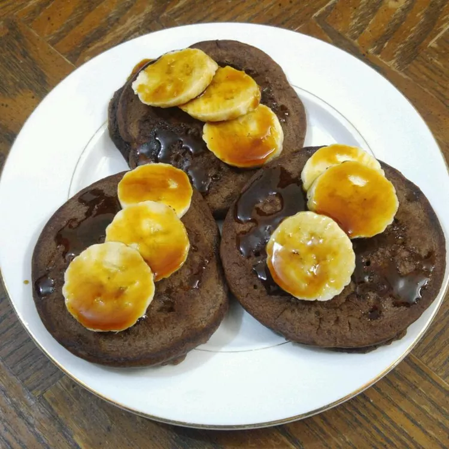

Chocolate Pancake

Description
These chocolate pancakes with chocolate chips are sweet and slightly gooey. Serve warm with fresh fruit and a dusting of powdered sugar.
Ingredients
- 1 ¼ cups milk
- 2 large eggs, at room temperature
- ½ teaspoon vanilla
- 2 tablespoons melted butter
- 1 ¼ cups all-purpose flour
- ¼ cup unsweetened cocoa powder
- 3 tablespoons white sugar
- ¼ teaspoon salt
- ½ cup semisweet chocolate chips
- cooking spray
Steps
- Whisk milk, eggs, and vanilla together in a bowl. Stir in melted butter.
- Whisk flour, cocoa powder, sugar, and salt together in a separate bowl. Pour in wet ingredients and mix until just combined. Stir in chocolate chips.
- Spray a large skillet with cooking spray and heat over medium-high heat. Working in batches, pour 1/4 cup batter into the hot skillet for each pancake. Cook until bubbles form and pop in the center of each pancake, 2 to 3 minutes. Flip and cook until golden brown on the other side, about 1 minute.